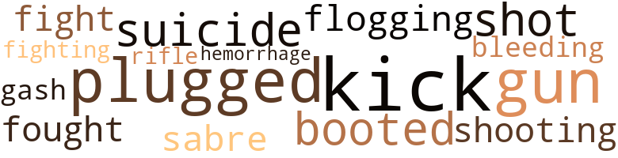

The Old Man's Place, by Sanford, John B. (1935)
6 music-related terms matched in this text.
Most frequent terms in this topic: pipe (4); scat (1); line (1)
pipe.n.04
Definition: a tubular wind instrument
| word | sentence |
|---|---|
| pipe | He was back in a couple of minutes with the broken leg of an iron bed , a piece of enameled pipe a little over a foot long ; the end of it was wrapped in a burlap bag . |
| pipe | Thinking that Trubee was alone , the driver again tried to slice him loose and get away , but while he was giving all of his attention to the man on his left , Pilgrim reached up over the other side of the seat , hit him on the top of his skull with the piece of pipe , and laid him out cold in the bottom of the wagon . |
| pipe | In the crotch of this v lay a thin pipe , and from this a spill of water curved into a fat wooden barrel . |
| pipe | Flood and Trubee drank from the end of the pipe . |
scat.n.01
Definition: singing jazz; the singer substitutes nonsense syllables for the words of the song and tries to sound like a musical instrument
| word | sentence |
|---|---|
| scat | The ground was papered brown with last year 's leaves , and on both sides of the road greenspeckled boulders were scattered through the deep woods . |
tune.n.01
Definition: a succession of notes forming a distinctive sequence
| word | sentence |
|---|---|
| line | The locomotive bunted the car out to the main line , where it was coupled with the last car of the local . |
20 violence-related terms matched in this text.
Most frequent terms in this topic: Kick (2); gun (2); plugged (2); shot (1); kick (1)
bleeding.n.01
Definition: the flow of blood from a ruptured blood vessel
| word | sentence |
|---|---|
| bleeding | Carrying the water around to the front of the lodge , he found Flood looking down at Pilgrim , who was lying on the ground bleeding from a gash in his scalp . |
| hemorrhage | Trubee 's mother had died of a hemorrhage an hour after he was born , and his father was left with the job of bringing up the child and running the farm . |
boot.v.01
Definition: kick; give a boot to
| word | sentence |
|---|---|
| booted | A brakeman in the Louisville yards heard him beating against the tin walls of the compartment , pulled him out by the hair , and booted him off the train . |
cut.n.05
Definition: a wound made by cutting
| word | sentence |
|---|---|
| gash | Carrying the water around to the front of the lodge , he found Flood looking down at Pilgrim , who was lying on the ground bleeding from a gash in his scalp . |
fight.n.05
Definition: a boxing or wrestling match
| word | sentence |
|---|---|
| fight | He remembered the Blockhouse on top of a longsweeping hill in the middle of a plain ; he remembered the metal markers that were stuck all over the plain to show where the officers had fallen during the fight . |
fight.v.02
Definition: fight against or resist strongly
| word | sentence |
|---|---|
| fought | He remembered having felt that the battle had n't been fought so long ago ; it 'd seemed then that he was walking through the fields only the day after Burgoyne had been beaten . |
| fighting | On account of his size , he did more fighting with a broom than a rifle , and he was still busy sweeping when the war ended . |
gun.n.01
Definition: a weapon that discharges a missile at high velocity (especially from a metal tube or barrel)
| word | sentence |
|---|---|
| gun | In a few months he was back again for the felony of carrying a gun after having been convicted of a crime , and this time he spent three years in jail . |
| gun | Absolutely penniless after his last release from the Island , he borrowed a gun and took the desperate chance of holding up a crap game in the basement of a political club on Bleecker Street , a game that he knew was being run by some of his old friends from Chelsea . |
kick_back.v.02
Definition: spring back, as from a forceful thrust
| word | sentence |
|---|---|
| Kick | Kick in , and blow . |
| kick | Pay up for them drinks , or I 'll kick the three of you out on your cans . " |
| Kick | " Kick who ? " he said . |
punch.v.01
Definition: deliver a quick blow to
| word | sentence |
|---|---|
| plugged | The boy was imprisoned for three days , but managed to last by prying up some of the slats and drinking the rank icewater that 'd collected above a plugged drain . |
| plugged | A few panes of glass remained in some of the windows ; where the glass was missing , the openings had been plugged with rags and cardboard . |
rifle.n.01
Definition: a shoulder firearm with a long barrel and a rifled bore
| word | sentence |
|---|---|
| rifle | On account of his size , he did more fighting with a broom than a rifle , and he was still busy sweeping when the war ended . |
saber.n.01
Definition: a fencing sword with a v-shaped blade and a slightly curved handle
| word | sentence |
|---|---|
| sabre | A sabre of hair drooped between his eyes . |
shoot.v.02
Definition: kill by firing a missile
| word | sentence |
|---|---|
| shot | The things he knew were of the private kind that only long familiarity with the neighborhood could have taught him : although he 'd never shot a deer , he knew the only saltlick in the district where he could see one almost any time he wanted to , and more than once he 'd had the excitement of sitting in plain view of the lick while a deer was feeding ; he knew the pools in Stewart Brook where the largest trout were to be found ; he had his own spring that he 'd stocked with minnows for bass fishing , and he knew an unbeatable bass bunk , a very small pond only three miles away from the farm across the mountains , but so hard to get to that he went there only when he had the whole day to spare ; and , what was rarest of all , he knew a nest that for five years running had been used by the same pair of duckhawks , a brace of birds that 'd gotten to know him so well that he could climb up the cliff to the very ledge they were perched on before they took wing . |
shooting.n.02
Definition: killing someone by gunfire
| word | sentence |
|---|---|
| shooting | Leaning against it , he stared at the track shooting out from under him and then at the shaking bottle he held loosely in his fingers . |
suicide.n.01
Definition: the act of killing yourself
| word | sentence |
|---|---|
| suicide | He put up a terrible holler and carried on as if the boy had asked him to consent to his committing suicide . |
whipping.n.01
Definition: beating with a whip or strap or rope as a form of punishment
| word | sentence |
|---|---|
| flogging | He did n't know that he 'd been disgraced ; he understood the flogging to be the natural result of his having dared to speak to a gentleman , and he admitted to himself that if their positions had been reversed he 'd have taken his stick and broken it over the jockey 's head for the insult . |
2 religion-related terms matched in this text.
Most frequent terms in this topic: Christ (1); wasps (1)
messiah.n.01
Definition: any expected deliverer
| word | sentence |
|---|---|
| Christ | Flood said , " For Christ 's sake , Turd , shut that , hole of yours . |
wasp.n.01
Definition: a white person of Anglo-Saxon ancestry who belongs to a Protestant denomination
| word | sentence |
|---|---|
| wasps | He heard a loud droning under him and knew that wasps had bored into the punk and made it their nest . |